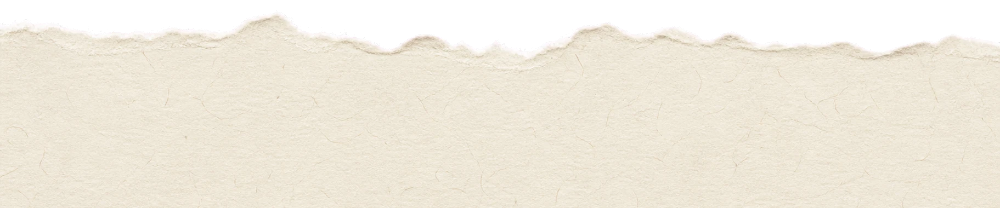
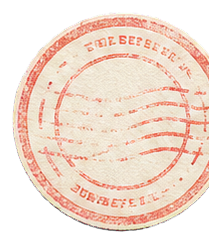
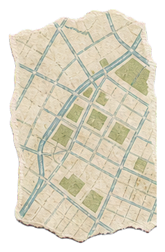
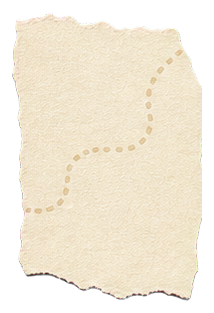
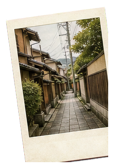
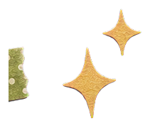
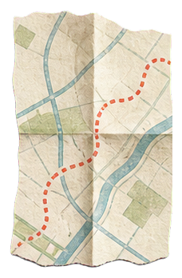
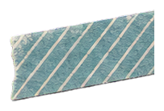

THE HIDDEN WAY
目的地は、
着くまで秘密。
かくれみちは、口コミの数だけでは見つからない小さな名店や、静かな公園、古い街角を探します。
画面に現れるのは、店名でも地図のピンでもなく、進む方向を示す矢印だけ。安全はいつでも確認できます。
DESTINATION
？？？
到着まで封印中






THE HIDDEN WAY
かくれみちは、口コミの数だけでは見つからない小さな名店や、静かな公園、古い街角を探します。
画面に現れるのは、店名でも地図のピンでもなく、進む方向を示す矢印だけ。安全はいつでも確認できます。
HOW IT WORKS
時間と気分、気になるカテゴリを選びます。
目的地の名前は見せず、進む方向だけをご案内。
到着した場所を写真や動画、ステッカーで記録できます。


FAQ
散歩の前に、気になることを。
散歩中は安全メニューから、いつでも目的地を確認できます。散歩の中止や地図アプリで帰り道を開く操作も用意しています。
近くに候補がない場合は検索範囲を広げたり、別のカテゴリを提案します。地域によって候補数は異なります。
撮影した写真や動画は、ユーザーが共有操作をしない限り自動でSNSへ公開されません。
iPhoneの設定、またはApp Storeのサブスクリプション管理画面から、いつでも確認・解約できます。
SUPPORT